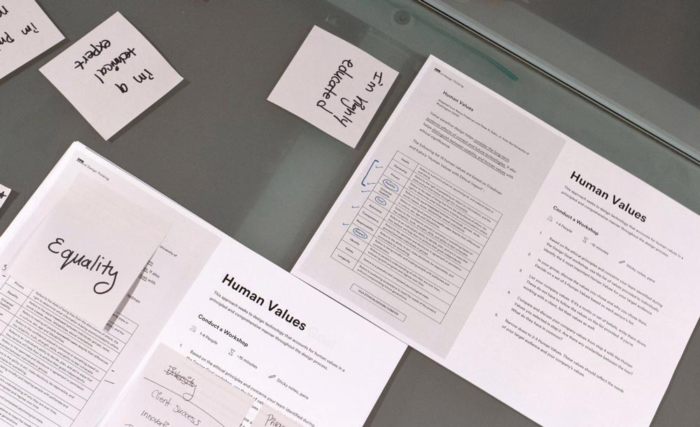

Research + Strategy
Interaction Design
Motion Design
Amanda Poh
Maheen Sohail
Here’s a question: how do you know the things you design won’t cause harm down the road? It’s a challenge for designers to discuss controversial issues regarding the products they’re making, and avoiding this can result in large consequences for the end user.
Ethical Design is a web resource that includes a new design methodology and a series of ethical questions that can be embedded within a variety of design processes. This toolkit is meant to help designers and product teams to focus on human values throughout their design process.
We created Ethical Design as a seven week project within our senior design course. Along the way, we received feedback and user tested with fellow students, staff, as well as designers and strategists from Artefact, IBM, and IDEO.
Feel free to read our Medium article about this resource where you can download this toolkit for your own work.
My focus during production was in prototyping the web platform used to contain our toolkit. These prototypes walk through the three primary actions visitors will make while using our resource: learning about what Ethical Design is, accessing the methodology, and finding relevant questions to ask their teams. Creating each flow posed challenges in motion, information, and visual design.
By reaching out to designers from first-in-class design organizations, we were able to engage in the topic of ethics and help spark the conversation further than we imagined. Soon after presenting this methodology to our colleagues and industry connections, we learned that our resource had been well received and was being tested by coworkers and fellow designers. We published two medium articles documenting the importance of ethics in design and a detailed run through of our methodology, which were both featured on the Muzli’s Medium Publication.